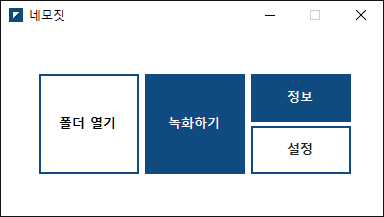
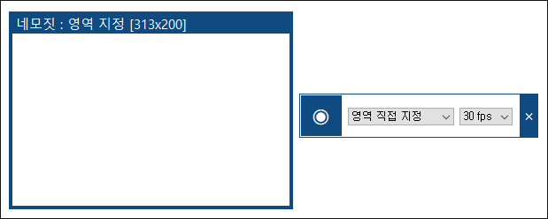
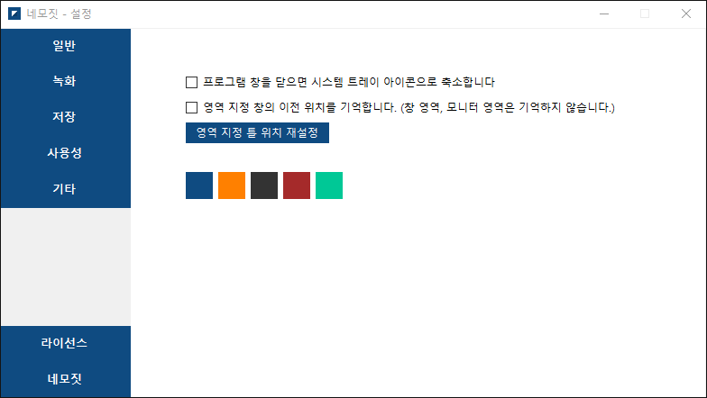
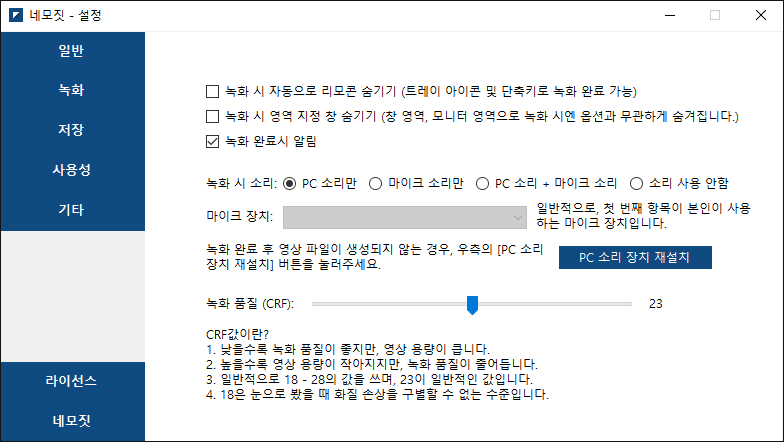
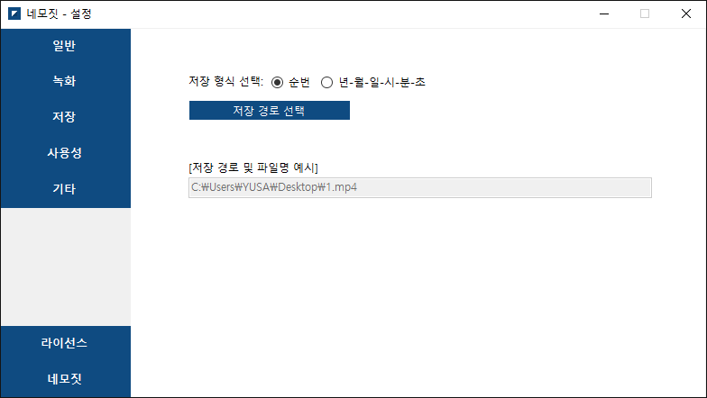
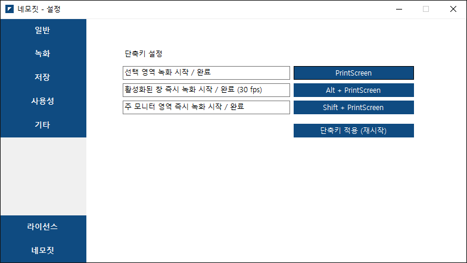
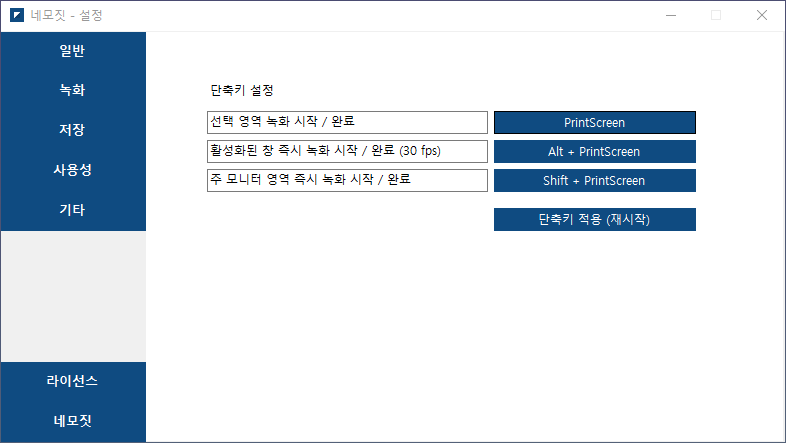

네모짓 알아가기
네모짓을 선택해주셔서 감사합니다. 이 글은 네모짓을 이용한 화면 녹화 방법을 다룹니다.화면 녹화하기
네모짓 메인 화면
네모짓의 메인 화면에서 '녹화하기' 버튼을 누르면 녹화를 할 수 있는 '창틀'과, 녹화를 시작할 수 있는 '레코더'가 나타납니다. 창틀을 사용해서 녹화하고자 하는 영역을 지정해준 뒤, 레코더의 녹화 시작 버튼을 눌러서 녹화를 시작할 수 있습니다.

창틀과 레코더
창틀의 모서리를 드래그하여 위치와 크기를 조정할 수 있으며, 레코더에서 녹화를 희망하는 프레임 속도를 선택할 수 있습니다. 레코더의 선택창을 이용하여 특정 프로그램만으로 영역을 지정하거나, 특정 모니터만으로 영역을 지정할 수도 있습니다. 이는 여러 프로그램을 띄우거나, 여러 모니터를 사용하는 사용자분들께 유용합니다.
녹화 저장하기
녹화를 중지하면 자동으로 저장이 되며, 몇 시간을 녹화하든 저장이 눈에 띄게 오래 걸리지는 않습니다. 녹화와 동시에 인코딩을 하는 FFmpeg 덕분입니다. 녹화 종료 후 뜨는 알림창을 누르거나, 메인 화면의 '폴더 열기'버튼을 눌러서 바로 저장 폴더를 열어볼 수 있습니다.
네모짓 설정하기
네모짓은 최대한 단순하고 꼭 녹화에 필요한 기능만 담은 프로그램입니다. 그렇기에 전문적인 녹화 프로그램처럼 어려운 설정을 가지고 있지 않고, 녹화와 편의성에 직접적으로 영향을 주는 간단한 설정만을 가지고 있습니다.
설정 화면 1. 일반
설정의 '일반'탭에선 네모짓의 사용과 관련된 일반적인 설정을 다룹니다.
- 프로그램 창을 닫으면 시스템 트레이 아이콘으로 축소합니다.: 메인 화면의 X표시를 눌러서 창을 닫아도 네모짓을 종료하지 않고 숨기기만 합니다. 이렇게하면 녹화가 원하는 때가 오면 바로 단축키를 이용한 캡처를 할 수 있어서 편리합니다.
- 영역 지정 창의 이전 위치를 기억합니다.: 이전 녹화했던 창틀의 범위를 기억하고 있다가, 사용자가 다시 창틀을 열면 해당 영역으로 창틀의 위치가 자동 조정됩니다.
또한, 하단의 색깔 버튼을 이용하여 네모짓의 테마색상을 지정할 수 있습니다.

설정 화면 2. 녹화
설정의 '녹화'탭에선 화면 녹화와 관련된 설정이 담겨있습니다.
설정의 '일반'탭에선 네모짓의 사용과 관련된 일반적인 설정을 다룹니다.
- 녹화 시 자동으로 리모콘 숨기기: 녹화 시 레코더가 자동으로 숨겨집니다. 녹화할 때 레코더의 모습까지 같이 녹화가 되는 경우, 이 옵션을 켜면 도움이 될 수 있습니다.
- 녹화 시 영역 지정 창 숨기기: 녹화 시 창틀이 자동으로 숨겨집니다. 녹화할 때 창틀이 거슬리는 경우, 이 옵션을 켜면 도움이 될 수 있습니다.
- 녹화 완료시 알림: 녹화 완료 후, 저장 완료를 알려주는 Windows 알림을 표시합니다. 이 옵션을 해제하더라도 Windows 알림이 아닌 간단한 녹화 종료음은 여전히 나타납니다.
- 녹화 시 소리: 녹화에 포함시킬 소리를 설정합니다. 하단의 마이크 장치를 선택하여 마이크 또한 동시 녹음이 가능합니다.
- 녹화 품질 (CRF): 녹화 품질을 설정합니다. 18부터 28사이의 값을 설정할 수 있으며, 18에 가까워질수록 원본 화질에 가까워집니다.

설정 화면 3. 저장
설정의 '저장'탭에선 녹화된 영상을 저장하는 것와 관련된 설정이 담겨있습니다.
- 저장 형식 선택: 저장 파일을 1.mp4와 같은 형태로 저장할 지, 2020-08-15-11-24-05.mp4와 같은 형태로 저장할 지 선택할 수 있습니다.
- 저장 경로 선택: 파일을 저장할 경로를 선택합니다.

설정 화면 4. 사용성
설정의 '사용성'탭에선 네모짓의 단축키를 설정할 수 있습니다.
- 선택 영역 녹화 시작 / 완료: 창틀이 열려있는 상태에서, 이 키를 누르면 녹화를 시작할 수 있습니다. 녹화 중에 이 키를 한번 더 누르면 녹화를 완료할 수 있습니다.
- 활성화된 창 즉시 녹화 시작 / 완료: 창틀이 열리지 않은 상태에서도 이 키를 누르면 현재 작업중인 창을 녹화할 수 있습니다. 녹화 중에 이 키를 한번 더 누르면 녹화를 완료할 수 있습니다.
- 주 모니터 영역 즉시 녹화 시작 / 완료: 창틀이 열리지 않은 상태에서도 이 키를 누르면 주 모니터 전체 영역을 녹화할 수 있습니다. 녹화 중에 이 키를 한번 더 누르면 녹화를 완료할 수 있습니다.
각각의 설명 옆에 있는 파란 버튼(사진에선 각각 PrintScreen, Alt + PrintScreen, Shift + PrintScreen으로 표기된 부분)을 누른 뒤, 설정을 저장하고자 하는 키를 누르면 단축키 변경이 가능합니다. 또한, 변경된 단축키는 네모짓 재시작 후 적용됩니다.
단축키 변경 모습
네모짓 가이드는 여기까지입니다. 기타 사용에 대한 문의가 있을 시, '자주 묻는 질문' 링크를 참고해주시거나 문의를 넣어주세요.
읽어주셔서 감사합니다.
자주 묻는 질문 문의하기